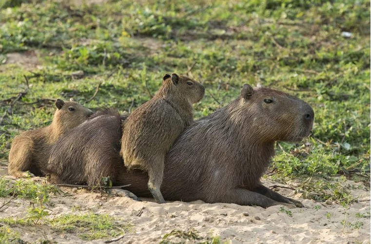
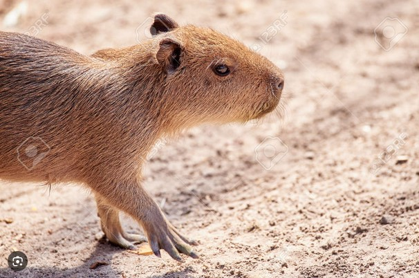
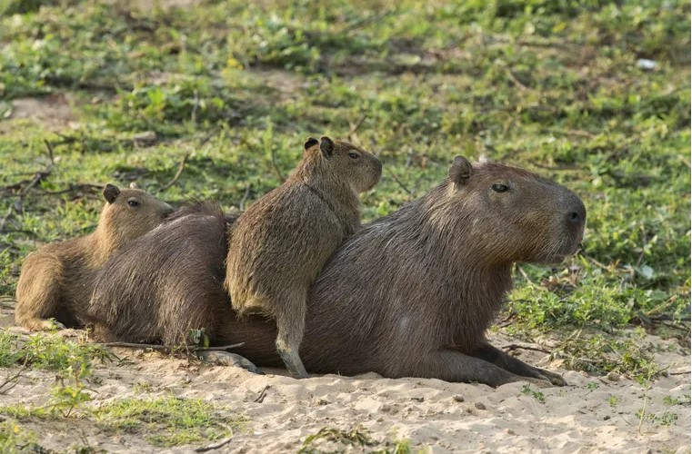
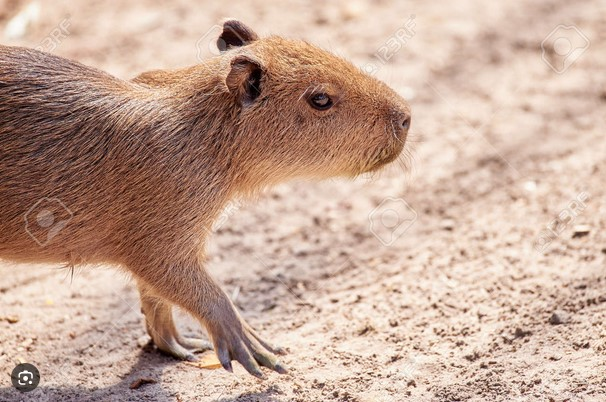

Explora el Mundo del Carpincho
Descubre más sobre el carpincho, el roedor más grande del mundo, nativo de las regiones húmedas de Sudamérica.
Aspectos Clave del Hábitat y la Geografía
Estos roedores prefieren las zonas húmedas como riberas de ríos y pantanos.
Dieta y Hábitos Alimenticios
Su dieta es herbívora, centrada en hierbas y plantas acuáticas.
Reproducción y Crecimiento
Los carpinchos tienen periodos de gestación de unos 150 días, con camadas de 2 a 8 crías.
Conservación y Amenazas
Si bien no están en peligro de extinción, los carpinchos enfrentan amenazas por la destrucción de su hábitat.
| Característica | Descripción |
|---|---|
| Peso | 35-65 kg |
| Longitud | 1.2-1.4 m |
| Altura | 50-60 cm a la cruz |
| Esperanza de vida | 8-10 años en libertad |
| Comportamiento | Social y grupal, vive en manadas de hasta 20 individuos |
| Comunicación | Emite sonidos chirriantes para comunicarse |
| Pelaje | Corto y denso, de color marrón a grisáceo |
| Actividad | Mayormente crepuscular y nocturno |
| Natación | Excelente nadador con membranas entre los dedos de las patas |
| Dieta | Herbívora, principalmente hierbas y plantas acuáticas |
 


